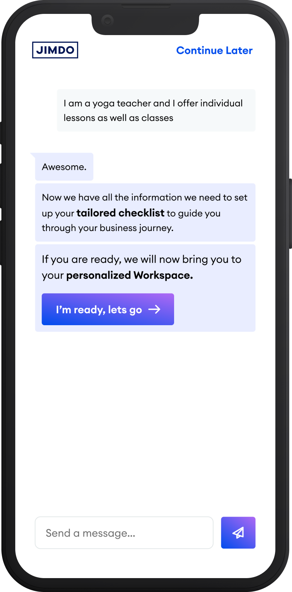
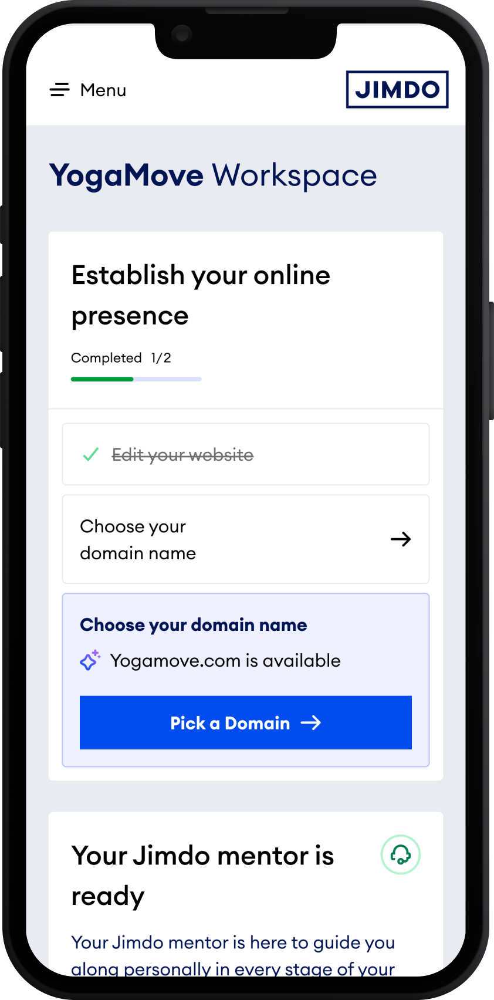
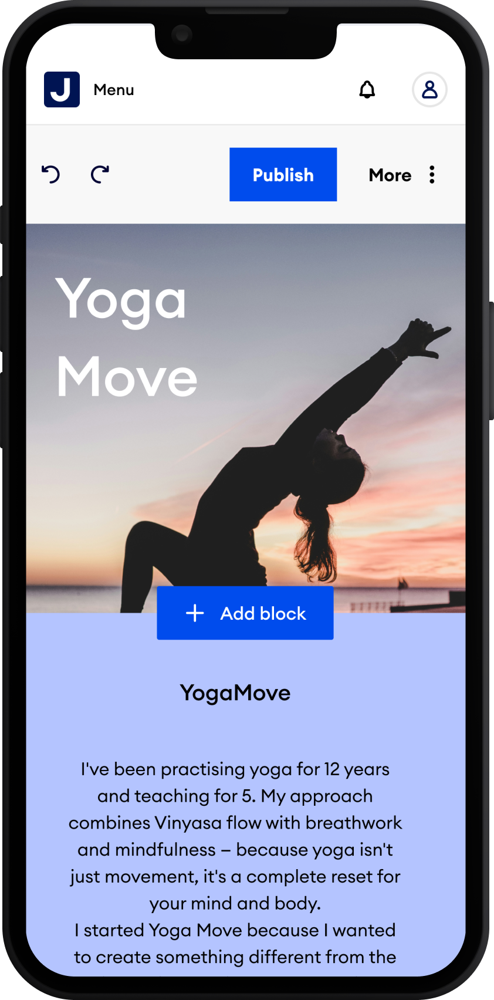

Mobile First
Most founders open Jimdo from their phone before they ever sit down at a laptop. Every screen in this project was designed mobile-first, then scaled up for desktop, not the other way round.

Describe the business

Get a tailored plan

Complete a task

Go live